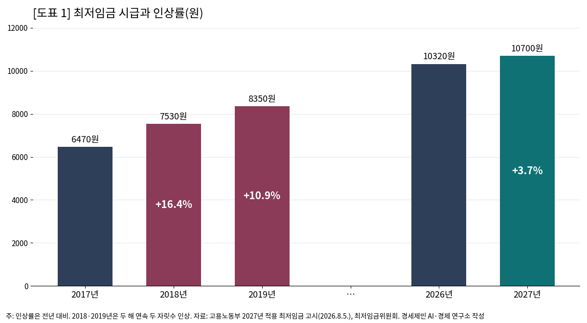
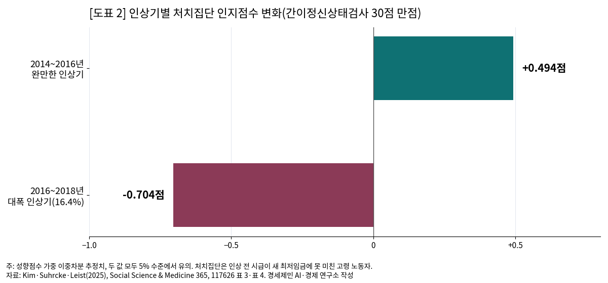
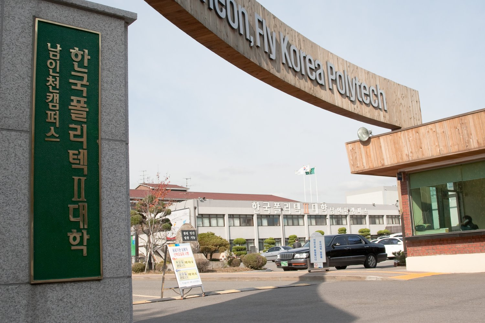

[경제] 최저임금 16.4% 오른 해, 고령 노동자 인지점수 떨어졌다
2018년 대폭 인상 뒤 저임금 고령 노동자 인지점수 0.704점 하락, 국제 학술지 논문
월소득 17만4600원 늘고 주당 근로시간 4.06시간 줄어…완만한 인상기엔 오히려 올라
AI경세제민=김갑봉 기자 | 최저임금을 크게 올리면 일자리가 줄어드는가. 한국은 해마다 이 물음을 두고 다툰다.
그런데 일자리는 남고 일하는 시간이 줄었다면 그 비용은 누가 치르는가. 국제 학술지에 실린 한 연구가 그 답을 고령 노동자의 인지 건강에서 찾았다.
20여 년 만의 최대 인상, 16.4%
2018년 최저임금은 시급 7530원으로 2017년 6470원보다 16.4% 올랐다. 연구진은 20여 년 만의 최대 인상 폭으로 봤다.
2019년에도 8350원으로 10.9% 올라 두 해 만에 시급이 29.1% 뛰었다. 연구진이 인용한 고용노동부 자료를 보면 2018년 인상의 영향을 받은 노동자는 약 460만명, 임금노동자의 24%다.
국내 실증연구는 주로 고용과 임금을 따졌다. 김태훈 당시 경희대 조교수는 2019년 『노동정책연구』에서 2008~2018년 지역별고용조사를 분석했다. 최저임금 인상이 전체 고용률을 유의하게 낮추지는 않았다는 결과다.
같은 연구에서 일용노동자 고용률은 줄었다. 60세 이상에서는 상용노동자와 자영업자의 근로시간이 유의하게 감소했다. 고용률보다 근로시간에서 변화가 먼저 나타났다.

인지점수 0.704점 하락
Jung Hyun Kim, Marc Suhrcke, Anja K. Leist 세 연구진이 이 시간의 변화를 건강으로 이었다. 논문은 2025년 1월 사회과학 분야 국제 학술지 『소셜 사이언스 앤드 메디신』에 실렸다.
자료는 45세 이상 1만여 명을 2년마다 조사하는 한국고용정보원의 고령화연구패널조사다. 2016년과 2018년에 모두 응답한 고령 노동자 462명을 추적했고, 처치집단의 평균 나이는 63.9세다.
2016년 시급이 새 최저임금 7530원에 못 미친 313명이 처치집단이다. 새 최저임금의 100~150%를 받던 149명이 통제집단이다. 두 집단의 변화 차이를 견주는 이중차분법을 썼다.
결과는 인지점수 0.704점 하락이다. 30점 만점인 간이정신상태검사 점수로, 인상 전 처치집단 평균은 27.36점이었다. 스스로 매긴 건강 점수에는 뚜렷한 변화가 없었다.
2014년 자료를 더한 사건연구에서도 인상 전에는 두 집단의 차이가 유의하지 않았다. 하락은 인상이 시행된 2018년에만 나타났다.
연구진은 이 크기를 기초연금 효과와 견줬다. 선행연구에서 기초연금을 5년 연속 받으면 인지점수가 1.301점 올랐다. 이번 하락 폭은 그 절반을 넘는다.
월급은 34% 늘고 일은 4시간 줄었다
처치집단은 애초에 소득이 낮았다. 2016년 월소득은 평균 101만8800원으로 통제집단 157만2300원의 65% 수준이었다.
인상 뒤 소득은 늘었다. 처치집단의 월소득은 2016년보다 2018년에 34% 많았고 통제집단은 12% 늘었다. 증가율이 통제집단의 2.8배다. 통제집단과 견준 월소득 증가분은 17만4600원이다.
일하는 시간은 줄었다. 처치집단의 주당 근로시간은 4.06시간 감소했다. 하루 8시간 기준으로 반나절을 넘는 시간이다. 인상 전 처치집단은 주 43.14시간 일했다. 시급은 올랐지만 일하는 시간이 그만큼 깎였다.
연구진은 근로시간 감소를 인지점수 하락의 주된 경로로 꼽았다. 고령자에게 일터는 머리를 쓰고 사람을 만나는 자리다. 다만 이 경로를 직접 검정하지는 않았다고 밝혔다.
다른 경로는 뚜렷하지 않았다. 직무만족과 고용안정, 흡연과 음주에서는 두 집단 사이에 유의한 변화가 나오지 않았다.
완만한 인상 땐 인지점수 올라
연구진은 같은 방법을 2014~2016년 완만한 인상기에도 적용했다. 이때는 처치집단의 인지점수가 0.494점 올랐다. 인상의 폭과 속도에 따라 건강 효과의 방향이 갈렸다.

결과는 여러 시험을 견뎠다. 통제집단의 임금 범위를 120~140%로 좁혀도 인지점수는 0.63~0.88점 떨어졌다. 일을 그만둔 사람까지 넣은 표본에서도 0.573점 떨어졌다. 처치집단을 인상 뒤 시급이 새 최저임금의 100~120%인 사람으로 좁히자 결과는 같은 방향으로 더 강하게 나왔다.
연구진은 크고 급격한 인상은 고령 노동자의 인지에 즉각 해를 끼칠 수 있어 신중해야 한다고 진단했다. 표본이 462명으로 작고 인상 뒤 1년 안의 단기효과만 봤다는 한계도 밝혔다.
통제집단의 임금이 함께 올랐을 가능성도 있다. 그렇다면 실제 효과는 추정치보다 클 수 있다. 젊은 노동자로 넓혀 해석하기는 어렵다고 연구진은 덧붙였다.
고령 취업자 1000만명, 시급 1만700원

국가데이터처가 2026년 8월 5일 낸 고령층 부가조사를 보면 5월 55~79세 취업자는 1012만5000명이다. 처음으로 1000만명을 넘었다. 65~79세 고용률은 47.8%로 절반 가까이가 일한다.
고령층이 가장 오래 일한 일자리를 그만둔 나이는 평균 53.0세다. 희망 근로 연령과 견주면 20년 넘게 차이가 난다. 연구진이 인용한 최저임금위원회 자료를 보면 2022년 60세 이상 노동자의 35.1%가 최저임금 언저리의 임금을 받았다.
일하고 싶어 하는 고령층은 69.2%이고 희망 근로 연령은 평균 73.6세다. 이 가운데 53.4%가 생활비를 보태려고, 36.7%가 일하는 즐거움 때문에 일을 원한다고 답했다. 연금을 받는 고령층은 52.7%이고 월평균 수령액은 88만원이다.
고용노동부는 같은 날 2027년 최저임금을 시급 1만700원으로 고시했다. 2026년 1만320원보다 3.7% 오른 금액으로, 2027년 1월 1일부터 모든 사업장에 적용한다. 주 40시간, 월 209시간으로 환산하면 월 223만6300원이다.
인상률 3.7%는 2018년 16.4%의 4분의 1에도 못 미친다. 일하는 고령층은 1000만명을 넘었고, 일하기를 바라는 고령층의 절반 이상은 생활비를 보태려 한다.
참고문헌
- Kim, Jung Hyun·Suhrcke, Marc·Leist, Anja K., 「The unintended effects of a large minimum wage increase on health: Evidence from South Korea」, 『Social Science & Medicine』 365, Elsevier, 2025년 1월, 117626. https://doi.org/10.1016/j.socscimed.2024.117626
- 김태훈, 「최저임금 인상의 고용 및 임금효과」, 『노동정책연구』 19(2), 한국노동연구원, 2019, 135~174쪽. https://repository.kli.re.kr/bitstream/2021.oak/2663/2/노동정책연구_제19권_제2호_5.pdf
- 국가데이터처, 「2026년 5월 경제활동인구조사 고령층 부가조사 결과」, 2026년 8월 5일(KDI 경제정보센터 전재). https://eiec.kdi.re.kr/policy/materialView.do?num=285107
- 세계일보, 「내년 최저임금 1만700원 확정…민주노총·소공연 이의 불수용」, 2026년 8월 5일. https://www.segye.com/newsView/20260805506126
- 아이뉴스24, 「2027년 최저임금 시급 1만700원 확정…3.7% 인상」, 2026년 7월 15일. https://v.daum.net/v/20260715085108633
- 뉴시스, 「데이터처, 5월 경제활동인구조사 고령층 부가조사 결과」, 2026년 8월 5일. https://www.newsis.com/view/NISX20260805_0003737146
- 데일리안, 「“생활비 때문에…73.6세까지 일하고 싶어”…고령층 취업자 1000만명 돌파」, 2026년 8월 5일. https://www.dailian.co.kr/news/view/1674703
- 경향신문, 「[‘시급 1만원 시대’ 시동]“인상분 재정 지원”」, 2017년 7월 16일. https://www.khan.co.kr/article/201707162254005
- 뉴시스, 「2년 연속 두 자릿수 인상…월 기준 174만5150원」, 2018년 7월 14일. https://mobile.newsis.com/view/NISX20180714_0000363608
- 매일신문, 「[속보] 2021 최저임금 8720원…1.5%(130원) 인상 '역대 최저'」, 2020년 7월 14일. https://www.imaeil.com/page/view/2020071400201507593
[사진 출처]
- [사진 1] 미 육군 제4보병사단 제1여단 Jonathan Sauls 중위, 「Seniors Greeted as VIP's to be Celebrated (9243237).jpg」, 2025년 8월 7일, 위키미디어 공용, 퍼블릭 도메인(미국 연방정부 저작물). https://commons.wikimedia.org/wiki/File:Seniors_Greeted_as_VIP%27s_to_be_Celebrated_(9243237).jpg
- [사진 2] 미 공군 Tallon Bratton 상병, 「51st FW trains with Korean Service Corps, strengthening mission-support readiness (9191800).jpg」, 2025년 7월 17일, 위키미디어 공용, 퍼블릭 도메인(미국 연방정부 저작물). https://commons.wikimedia.org/wiki/File:51st_FW_trains_with_Korean_Service_Corps,_strengthening_mission-support_readiness_(9191800).jpg
- [사진 3] prima, 「6.남인천캠퍼스.JPG」, 2010년 3월 8일, 위키미디어 공용, 퍼블릭 도메인. https://commons.wikimedia.org/wiki/File:6.남인천캠퍼스.JPG
※ 이 기사는 AI 프로그램 클로드를 활용해 작성했습니다.
관련기사
- [경세제민] 최저임금③ 독일 벌금 7억원, 한국은 2000만원
- [자영업자②] 누가 자영업자와 노동자를 싸우게 만드는가
- [경세제민] 자영업자① 자영업자는 사장인가 노동자인가
- [한국경제 8대 불편한 진실④] 국민연금 소득대체율 43%, 평균 노령연금은 70만6150원
저작권자 © AI경세제민 무단전재 및 재배포, AI학습 및 활용 금지